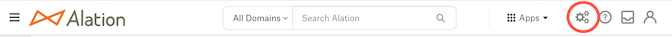
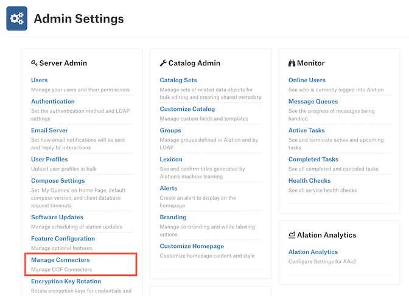
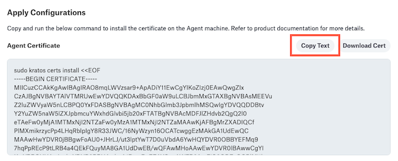

Install the Alation Agent¶
Alation Cloud Service Applies to Alation Cloud Service instances of Alation
Installing the Alation Agent (Agent) involves six basic steps:
Prepare for the installation.
Navigate to the Agent dashboard.
Perform the preflight check (optional).
Download the Agent and run the installation script.
Name the Agent.
Generate encryption certificates.
These steps are described in detail below. You will be switching back and forth between Alation and the Agent’s host machine to complete the installation. You’ll use information provided in Alation to run commands on the Agent machine, and you’ll sometimes copy the output of those commands back into Alation.
You can install multiple Agents, each on its own machine, and connect them all with Alation Cloud Service. This may be needed if you have data sources in different geographical locations, network segments, or security zones.
Step 1: Prepare for the Installation¶
Before you can install the Agent, you must:
Open a support ticket to:
Request that the Agent be enabled on your Alation Cloud instance. You can verify this has been done by having a user with the role of Server Admin navigate to the Admin Settings, then Manage Connectors. If that user can see the Agents tab on the left and click on it to open the Agents Dashboard, then the Agent has been enabled on your Alation Cloud instance.
Request the OCF connectors you would like to use with the Agent.
Provision a Linux host to install the Agent on.
Check the System Requirements for the required hardware and software.
The Agent’s host can be a physical or virtual machine. A virtual machine can be set up in a shared server environment, as long as the system requirements are met.
The Agent machine should be located appropriately within your network so that it can access the relevant data sources.
Don’t run other software on the Agent machine—only the Agent should be installed.
Ensure that outbound port 443 is open.
If you are using an HTTP CONNECT proxy, the proxy needs to allow resolving the DNS address within your Alation Cloud instance that is available for the Agent. You will find this address in Step 3: Preflight Check. If your proxy server is a TLS middlebox, additional steps are required. Contact Alation Support for more information.
Get access to Alation’s Customer Portal. At least one person in your organization should already have access. If you don’t know who that is, contact your account manager.
Make sure you have the Server Admin role in Alation.
Step 2: Navigate to the Agent Dashboard¶
First ensure you have completed the prerequisites in the prior step. You must have the Server Admin role in Alation to complete the remaining steps.
In Alation, click on the Settings gear icon in the top right corner. This opens the Admin Settings page.
Under the Server Admin section, click Manage Connectors.
Click the Agents tab. The Agents Dashboard appears.
Click the Add New Agent button.

The Add New Agent dialog will appear.
Step 3: Preflight Check (Optional)¶
Check that the Agent host machine can resolve the DNS that is available for the Agent from your Alation Cloud instance. You can find the address on the first screen of the Add New Agent dialog.
You will need to make sure you have SSH credentials to the Agent machine and that it has outbound access to the open internet. If you do not want the Agent to have outbound access to the open internet, you may use a proxy server. In that case you will need to whitelist the Alation Cloud address on your proxy server to allow the Agent machine outbound access to Alation Cloud Service.
Then you can use a tool such as dig or nslookup to see if you can reach your Alation Cloud instance address. For example:
dig <your-alation-cloud-domain>
If your Alation Cloud instance is reachable, the output of the dig command should include something like this:
;; ANSWER SECTION:
<your-alation-cloud-domain>. 60 IN A <alation-cloud-IP>
If your Alation Cloud instance is not reachable, you will need to configure your network to correctly resolve the DNS.
Step 4: Download and Run Installation Script¶
You’re now ready to download the software package and run the installation script.
In the Add New Agent dialog, click the link to the Alation Customer Portal.
In the Alation Customer Portal, select the latest available version for the desired operating system:
RHEL for Red Hat-based systems
DEBIAN for Debian-based systems
The Agent will download to your computer as a tar.gz file named ocf-agent-<agent-version>-<operating-system>.tar.gz.
If needed, transfer the downloaded file to the Agent’s host machine. For example, if you downloaded the Agent file to a Unix-based machine, you could transfer the file using the
scpcommand in Terminal:scp /local/path/to/ocf-agent-<agent-version>-<operating-system>.tar.gz <ssh-user>@<server-address>:/remote/path/to/ocf-agent
On the Agent’s host machine, extract the .tar.gz file. Example:
tar -xf ocf-agent-<agent-version>-<operating-system>.tar.gz
The Agent installation files are extracted into an ocf-agent directory.
Change into the ocf-agent directory.
cd ocf-agent
In Alation, copy the relevant installation command from the Install Agent screen.
In the terminal on the Agent’s host machine, make sure you are in the ocf-agent directory, then paste and run the installation command. This will install and configure the Agent.
(Optional) If your network routes outgoing traffic through an HTTP CONNECT proxy, see the Advanced Configuration section below.
In Alation, click the Next button.
You have now installed and configured the Agent on a machine inside your network. Next you’ll need to name the Agent in Alation.
Advanced Configuration¶
If your network routes outgoing traffic through an HTTP CONNECT proxy, you need to:
Add the Alation Cloud Service connectivity endpoint to your proxy server’s allow list.
Add the proxy’s address to the Agent configuration file.
Proxy Allow List
You will need to add the Alation Cloud Service connectivity endpoint to your proxy server’s allow list so the Agent can reach your Alation Cloud Service instance.
The Alation Cloud Service endpoint is shown on the
addressline of the Agent installation command. This is the same address that should be in your Agent configuration file at /etc/hydra/hydra.toml.
Add Proxy Address to Agent Config
This is done on the Agent’s host machine. The steps depend on whether your proxy requires authentication.
No Authentication
For proxies that don’t require authentication, edit /etc/hydra/hydra.toml to add the following line:
web_proxy = "<proxy-address>:<proxy-port>"
Basic Authentication
Starting with Agent version 1.2.1.1168, you can route the Agent through proxies that require basic authentication. Edit /etc/hydra/hydra.toml to add the following line:
web_proxy = "<username>:<password>@<proxy-address>:<proxy-port>"
Replace the parts in angle brackets with the appropriate information for your proxy. Don’t include the angle brackets. Do include the quotes. The proxy address can be a domain name or an IP address. If no port is provided, the Agent defaults to port 3128.
Here’s an example with basic authentication:
web_proxy = "jane:securepassword@company.proxy.com:3128"
Step 5: Name Your Agent¶
In Alation, enter a name for the Agent. This name can’t be changed, so choose carefully.

Note
The Agent’s name is used to identify connectors that you install on this Agent. When you install a new connector or add a new data source and link it to your Agent, you’ll see the Agent name added to the end of the connector name.
(Optional) Enter a description of the Agent. This appears on the Agent’s detail page. The description can’t be changed later.
Click the Next button, then confirm the name you chose.
Now that you’ve named the Agent, it’s time to establish the secure connection between your Alation Cloud instance and the Agent.
Note
After starting the Add Agent workflow you can always close the Add New Agent dialog. You can pick it back up again at a later time by returning to the Agent Dashboard and clicking on the Complete Setup link.
Step 6: Generate Encryption Certificates¶
Alation uses signed certificates to encrypt the communication between Alation and the Agent.
On the Generate Certificate Signing Request (CSR) screen, copy the provided command and run it on the Agent’s host machine.
sudo kratos certs gen
The command will generate a certificate signing request. Example output:
-----BEGIN CERTIFICATE REQUEST----- <your certificate signing request> -----END CERTIFICATE REQUEST-----
Copy the certificate signing request from the Agent machine, including the dashes.
In Alation, paste the certificate signing request into the provided box under Certificate Signing Request Output. Then click the Next button.

Alation will generate two signed certificates—one for the Agent and one root certificate. Copy the provided certificate installation command.
On the Agent’s host machine, paste the copied certificate command and run it. This installs the certificate.
Restart the Agent by copying the provided command and running it on the Agent’s host machine.
sudo systemctl restart hydra
When the Agent has finished restarting, click the Finish button in Alation. Check that your Agent has a status of Connected in the Agent Dashboard. If it doesn’t, check the Troubleshooting page.
Note
The certificates will automatically expire after one year.
If the installation was successful, you can now install connectors on your Agent.